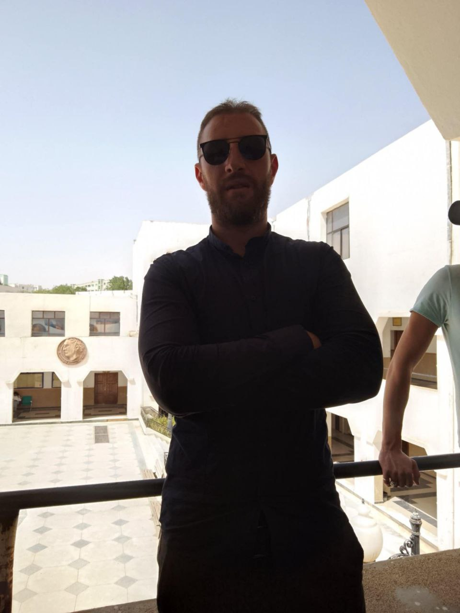

home

Nasser is a professional web developer with an academic background in clinical psychology (Master 2). He integrates his passion for programming with a deep understanding of the human mind to design innovative and interactive user interfaces (UI) and user experiences (UX). He always strives to provide technical solutions that combine high performance with carefully considered design to offer a unique user experience.
services
html
I offer a website development service using HTML to build the basic structure of websites and web pages. I ensure a clean and organized code, perfect for personal websites or landing pages.
css
Transform your ideas into unique visual experiences with CSS. I design responsive user interfaces that ensure a perfect display on all devices, with a focus on aesthetics and performance. I provide design solutions that enhance your brand's identity and captivate your visitors from the first glance.
js
I offer development services using JavaScript to create interactive user interfaces and dynamic web solutions. I am committed to delivering clean and efficient code that ensures excellent performance and a smooth user experience for your website.
projects

PHQ-9 Digital Tool
"A smart digital version of the PHQ-9 scale, designed to measure the severity of depression by merging UI/UX development with Clinical Psychology. This accessible tool (A11y) provides immediate preliminary screening through a seamless experience. Note: Results are indicative and do not replace a professional clinical diagnosis or consultation."